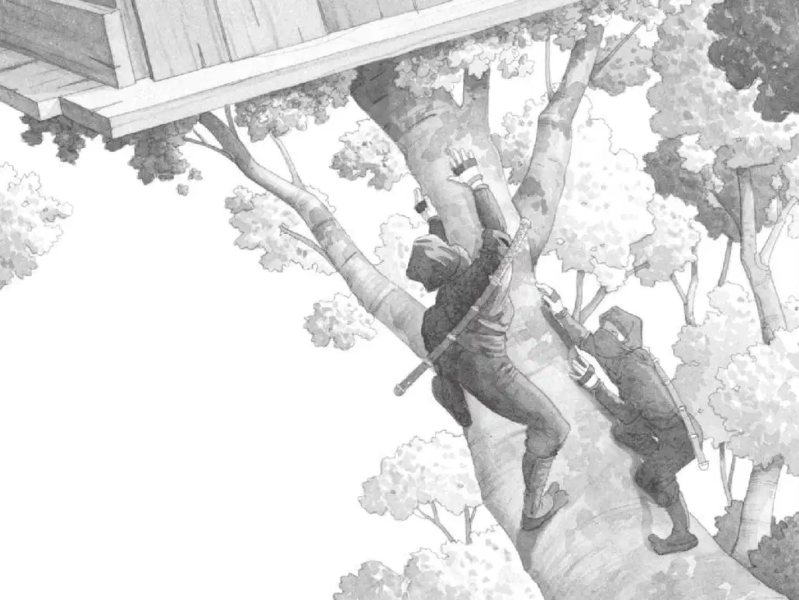

杰克睁开眼睛。
安妮正在向窗外眺望，小老鼠从她的口袋里探出脑袋。
杰克也朝窗外望去，空气凉爽而清新。
树屋落在了一棵开着白花的树上。这棵树位于半山腰的树林里，旁边有一条水流湍急的小溪，溪水哗哗地向山下冲去。
两名忍者站在水边的岩石上，眼睛正盯着下面的山谷。
一名忍者是高个子，另一名是矮个子。两人都穿着黑衣、黑裤，脸上蒙着黑面罩，背上背着刀。
这场景跟那幅图片上的一模一样。
杰克赶紧蹲了下来，他压低声音对安妮说：“当心，别让他们看见你。”
“为什么？”安妮小声问。
“他们可能会以为我们是敌人。”杰克轻声说。
安妮在杰克身边蹲了下来。
杰克把眼镜往上推了推。他准备好好看一看那本关于忍者的书。
他拿起书，翻到开头，读道：
忍者又被称为影子武士，关于他们的事迹，我们知之甚少。
历史学家认为忍者生活在14至17世纪的日本。忍者男女皆有。
他们有时为保护家人而战，有时被军阀雇用，充当密探。
“哇，”杰克轻声感叹，“我们来到了好几百年前的日本！”
杰克打开背包，掏出了笔记本和铅笔。杰克喜欢做笔记，这会儿他写道：
“杰克，”安妮小声说，“他们正往这边看呢，我们是不是被发现了？”
杰克偷偷向窗外望了一眼，恰好撞上了那名高个子忍者的目光。
“咦——嘿！”高个子忍者大喊一声，拔腿就朝树屋这边冲了过来。矮个子忍者跟在后面。
“糟了！”安妮说。
“我们得赶紧走！那本宾夕法尼亚的书呢？”杰克说着和安妮一起焦急地找起来。
可是宾夕法尼亚的书在哪儿呢？那本书里有蛙溪的图片。没了它，杰克和安妮可怎么回家呀？

“哪儿都没有！”安妮喊了起来。
“必须赶紧采取行动。”杰克说，“快！把绳梯拖上来！”
杰克和安妮连忙抓住绳梯，使劲把它拖进了树屋。
就在那一刹那，高个子忍者一下子扑到了树干上。他迅速往上爬，矮个子忍者也跟了上来。他们爬得飞快，身手像猫一样敏捷。
杰克和安妮吓得蜷缩在树屋的一个角落里。
两名忍者爬进了树屋，谁也没有发出声响。